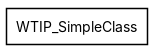
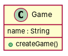

← all cases
D2/WTIP_SimpleClass — model qwen, condition B, run 1
1. Requirements (input)
R1: A classifier
R2: A class could be persistent.
R3: PrimitiveDataType is a Classifier and has a name
R4: In a simple class, an association has a name of type string.
R5: The attribute of a simple class has a name of type string.
R6: A Class of a SimpleClass may have one parent Class.
R7: An Association of a SimpleClass has one src that is a Class.
R8: An Attribute of a SimpleClass has one type. The type is a Classifier
2. Result 1 → Result 2 (ambiguity removal)
Red, struck-through: removed by ambiguity removal; green: added.
| classes (4 → 4) |
|---|
| Association |
| Classifier |
| PrimitiveDataType |
| TypeString |
| attributes (3 → 3) |
|---|
| Association.name |
| Association.src |
| TypeString.name |
| relations (2 → 2) |
|---|
| generalization: PrimitiveDataType -> Classifier |
| generalization: Type -> Classifier |
3. Ambiguity tags
| id | req | type | cue | status | readings / explanation |
|---|
4. Diagrams generated from the shared model
usecase diagram
class diagram
5. Code skeleton (Python; Java in code/java/)
"""Code skeleton generated from the shared model of D2/WTIP_SimpleClass.
Every class and method records the requirement(s) it traces to."""
from __future__ import annotations
import dataclasses as _dc
import enum as _enum
import typing as _t
@_dc.dataclass
class Game:
"""Source: R1"""
name: _t.Optional[str] = None
def createGame(self) -> None:
"""Operation."""
raise NotImplementedError
6. Validation, checks and traceability
| python_compiles | True |
|---|
| java_compiles | True |
|---|
| attribute_mismatches | 0 |
|---|
| method_mismatches | 0 |
|---|
| use_cases | 0 |
|---|
| use_cases_without_actor | 0 |
|---|
| use_cases_without_method | 0 |
|---|
| actors_without_use_case | 0 |
|---|
| relations_to_unknown_class | 0 |
|---|
| inconsistencies | 0 |
|---|
| inconsistency_rate | 0.0 |
|---|
| requirement_coverage | 0.125 |
|---|
| validator fixes | |
|---|
| assumptions for open ambiguities | [] |
|---|
7. Scores against the reference
| element | P | R | F1 | TP/FP/FN |
|---|
| classes | 0.0 | 0.0 | 0.0 | 0/1/5 |
| attributes | 0.0 | 0.0 | 0.0 | 0/1/5 |
| relations | 0.0 | 0.0 | 0.0 | 0/0/6 |
| relations_strict | 0.0 | 0.0 | 0.0 | 0/0/6 |